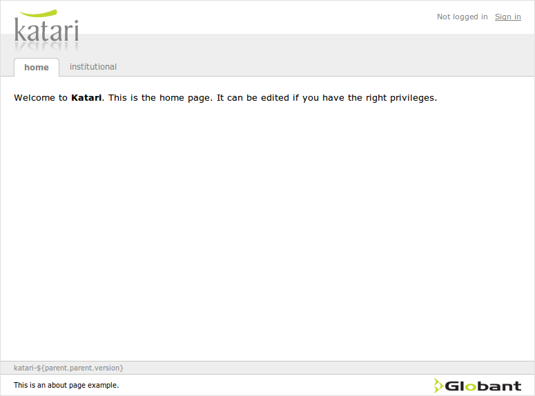
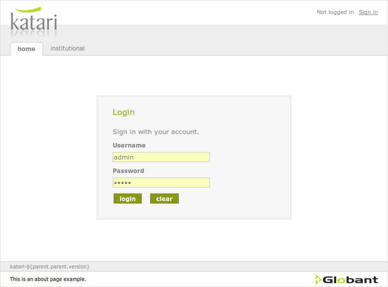
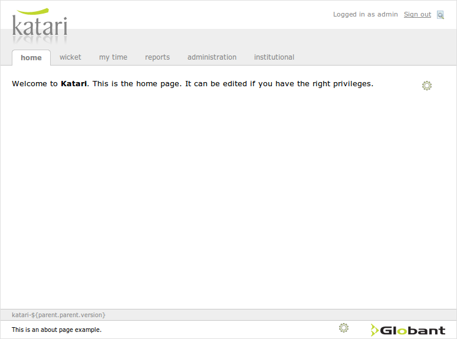

Welcome to Katari
Katari is a powerful open source development platform, created by Globant, for building rich Internet applications in Java. Katari integrates technologies such as Asynchronous JavaScript and XML (AJAX), Spring framework (IOC, MVC, Transaction) and Java Persistence API (Hibernate) into a unified full-stack solution.
But you don't have to spend a week or more properly integrating and configuring them. With Katari you get a sample application up and running in a couple of minutes. This sample application includes:
- Secured and non-secured content. A login page allows you to access secured content.
- A nice styled site, where all styling element are under your control.
- A security aware menu structure.
- Apache camel integration
- Quartz-Scheduler integration
- Apache Shindig & Gadget Container
- Sample pages that can be edited on line with the help of FCKEditor.
When you start a project with Katari you will also find a strong reliance on best practices:
- Code is well documented, consistently formatted and easy to read.
- You will find testing (unit and integration) already in place, with a nice approach to integrating tests that hits the database.
- Katari modular approach will make it easier to develop guided by business driven requirements.
- You can get started in Katari with the help of the provided maven archetype (yes, it uses maven). The getting started guide will give you instructions on how to start with Katari.
Starting a Katari project
To demonstrate how to start a project from scratch with Katari, We will be creating a sample application called acme-coyote. But first you need:
- java-1.5 or above.
- maven-2.2.1 or above. It will probably work from maven 2.1. Maven 2.0.x packaged an old version of jtidy classes that clashes with jetty.
- mysql-5.x.
Katari provides a maven archetype to make it easy to start a new project:
mvn archetype:generate -DarchetypeArtifactId=katari-archetype \ -DarchetypeGroupId=com.globant.katari -DarchetypeVersion=0.42 \ -DarchetypeRepository="http://katari.globant.com/nexus/content/repositories/globant" \ -Drepository="http://katari.globant.com/nexus/content/repositories/globant"
This will ask for the following information:
- the project friendly name
- the group id
- the artifact id
- the project version.
For consistency, we recommend the groupId is of the form your domain.artifactId.
You can also create the project in batch mode, passing all the information in the command line. To see it in action, lets create the coyote application for our client acme:
mvn archetype:generate -DarchetypeArtifactId=katari-archetype \ -DarchetypeGroupId=com.globant.katari -DarchetypeVersion=0.42 \ -DarchetypeRepository="http://katari.globant.com/nexus/content/repositories/globant" \ -Drepository="http://katari.globant.com/nexus/content/repositories/globant" \ -DinteractiveMode=false \ -DfriendlyName="Acme tools for the coyote" \ -DgroupId=com.globant.acme.coyote -DartifactId=acme-coyote
This creates a full fledged application with the following features:
- Menu management.
- Security.
- A login page.
- A report management module.
- A module that allows users to edit html pages.
(Note: if you are behind a proxy, you may be hit by bug http://jira.codehaus.org/browse/ARCHETYPE-202: maven will freeze for a minute or two trying to download archetype-catalog.xml. Add -DarchetypeCatalog=local to speed things up.)
Once the archetype finishes, you will find a directory called acme-coyote. There you will find:
pom.xml dev |-- acme-coyote-style | |-- src | | |-- main | | `-- site | `-- pom.xml |-- acme-coyote-web | |-- src | | |-- main | | | |-- java | | | |-- resources | | | |-- sql | | | `-- webapp | | | |-- index.jsp | | | `-- WEB-INF | | | |-- applicationContext.xml | | | |-- applicationContextRuntime.xml | | | `-- web.xml | | `-- site | `-- pom.xml |-- src | |-- main | | |-- assemble | | `-- config | `-- site | |-- apt | | |-- index.apt | | `-- *.apt | `-- site.xml |-- pom.xml `-- README
The structure follows Globant CMMi standards, with a dev top level module. Below that, the archetype creates two modules: web and style.
The dev/README provides the necessary information to getting started with the project. So follow the instructions under the 'Quick start guide' title and you will have a running Katari application hitting a database.
When you run jetty, it will tell you in which port it is running (usually port 8088). So open in the browser http://localhost:8088/acme-coyote-web, and you will see the home page for anonymous users.
If you click the login link, you can log in using admin for the username and admin for the password, as show in the login page.
After a successful login you will see the katari home page for logged in users. You notice that you now have additional menus, all accesible to the roles that the admin user has. If you now navigate to the home page, you will also see a new icon at the top right corner. This icon, shown when you have the correct roles, allows users to edit the page.
Now you have acces to new menu entries due to the administrator privileges granted to admin.
Creating your first module
We will now create a module named hello in the previous project. Katari provides a maven archetype to create modules. Go to the dev directory created in the previous step and run:
mvn archetype:generate -DarchetypeArtifactId=katari-module-archetype \ -DarchetypeGroupId=com.globant.katari -DarchetypeVersion=0.42 \ -DarchetypeRepository="http://katari.globant.com/nexus/content/repositories/globant" \ -Drepository="http://katari.globant.com/nexus/content/repositories/globant" \ -DinteractiveMode=false \ -DfriendlyName="Acme tools for the coyote - hello" \ -DgroupId=com.globant.acme.coyote \ -DartifactId=acme-coyote-hello -DmoduleName=hello
This creates a new maven module under the directory acme-coyote-hello. This directory now contains a maven project with acme-coyote-hello artifactId. The directory structure created by the archetype is:
acme-coyote-hello
|-- pom.xml
`-- src
|-- main
| |-- java/com/globant/acme/coyote/hello/view
| | `-- HelloController.java
| `-- resources/com/globant/acme/coyote/hello
| |-- module.xml
| `-- view
| |-- hello.ftl
| `-- spring-servlet.xml
|-- site
| |-- apt
| | `-- index.apt
| `-- site.xml
`-- test
|-- java/com/globant/acme/coyote/hello
| |-- SpringModuleTest.java
| `-- view
| |-- HelloControllerTest.java
| `-- SpringServletTest.java
`-- resources
`-- log4j.propertiesThe generated maven package contains a katari module described in:
src/main/resources/com/globant/acme/coyote/hello/module.xml:
<?xml version="1.0" encoding="UTF-8"?>
<beans xmlns="http://www.springframework.org/schema/beans"
xmlns:xsi="http://www.w3.org/2001/XMLSchema-instance"
xmlns:katari="http://www.globant.com/schema/katari"
xsi:schemaLocation="http://www.springframework.org/schema/beans
http://www.springframework.org/schema/beans/spring-beans-2.0.xsd
http://www.globant.com/schema/katari
http://www.globant.com/schema/katari/katari.xsd">
<bean id="hello.module" class="com.globant.katari.core.web.ConfigurableModule">
<property name="entryPoints">
<!--
The servlet mappings. It maps the spring DispatcherServlet to *.do.
-->
<bean class="org.springframework.beans.factory.config.MapFactoryBean">
<property name="sourceMap">
<map>
<!-- The spring-mvc controller servlet -->
<entry key=".*\.do">
<bean class="com.globant.katari.core.web.ServletAndParameters">
<constructor-arg index="0">
<bean class="com.globant.katari.core.web.DispatcherServlet" />
</constructor-arg>
<constructor-arg index="1">
<map>
<entry key="contextConfigLocation">
<value>
classpath:/com/globant/acme/coyote/hello/view/spring-servlet.xml
</value>
</entry>
</map>
</constructor-arg>
</bean>
</entry>
</map>
</property>
</bean>
</property>
</bean>
</beans>This file is a standard spring bean definition file. It must contain a bean named module-name.module, of a type that implements Module. The most common implementation is ConfigurableModule, that is a simple pojo with setters for all the properties.
This looks complex, but is is simply a servlet configuration equivalent to what you would do in web.xml, but in spring style. This entryPoints property of the hello.module bean is a map of regular expressions to servlets. This example maps all requests ending in .do to the DispatcherServlet of spring. This DispatcherServlet is configured with the servlet parameter contextConfigLocation set to the full classpath to spring-servlet.xml. The spring-servlet.xml file is the standard bean definition file that contains the spring controllers.
When a user makes a request to context-path/module/hello/whatever.do, this request is routed to the hello module, the whatever.do fragment is matched with the defined entry points for that module and finally routed to the corresponding servlet.
This module declares a spring dispatcher servlet configured in:
src/main/resources/com/globant/acme/coyote/hello/view/spring-servlet.xml
This file declares a spring controller (HelloController) that listens to the /hello.do request:
<?xml version="1.0" encoding="UTF-8"?>
<beans xmlns="http://www.springframework.org/schema/beans"
xmlns:xsi="http://www.w3.org/2001/XMLSchema-instance"
xmlns:p="http://www.springframework.org/schema/p"
xmlns:katari="http://www.globant.com/schema/katari"
xsi:schemaLocation="http://www.springframework.org/schema/beans
http://www.springframework.org/schema/beans/spring-beans-2.0.xsd
http://www.globant.com/schema/katari
http://www.globant.com/schema/katari/katari.xsd">
<!-- freemarker config -->
<bean id="freemarkerConfig" class="com.globant.katari.core.web.FreeMarkerConfigurer"
p:templateLoaderPath='classpath:/com/globant/acme/coyote/hello/view/'
p:debugPrefix='../acme-coyote-hello/src/main/resources'
p:debug-ref='debugMode'/>
<!-- View resolvers can also be configured with ResourceBundles or XML files.
If you need different view resolving based on Locale, you have to use the
resource bundle resolver. -->
<bean id="viewResolver"
class="com.globant.katari.core.web.FreeMarkerViewResolver"
p:prefix="/" p:suffix=".ftl"
p:exposeSpringMacroHelpers="true"
p:exposeRequestAttributes="true" />
<bean name='/hello.do'
class='com.globant.acme.coyote.hello.view.HelloController'/>
</beans>As you can see, this file looks like a standard spring-mvc dispatcher servlet configuration file. The only things to notice are related to the freemarkerConfig bean. This bean is from a katari package instead of spring's. This is really optional (you can use the one provided by spring), but Katari's implementation adds a nice feature: Katari searches ftl files from the file system if debug mode is enabled. This makes it very convenient to edit ftl and view the result in the browser on the fly. This feature is enabled with the debug and debugPrefix properties. debugPrefix is the path relative to the web application were katari will search for the ftl files.
This file must be included in your main application context, webapp/WEB-INF/applicationContext.xml. When the application loads, it finds and initializes all beans implementing the Module interface.
So, what is a module for Katari? A module is a vertical cut in an application, comprising all the typical layers: view (controllers and views, in spring jargon), application layer (facades or commads), domain layer (repositories, entities, domain services, etc, in Domain Driven Design parlance), and the persistence or integration layer (usually hibernate).
A module can be packaged in its own jar and reused in other applications. The Katari core takes care of integrating the module features.
The module archetype creates a hello world page.
Our hello world page will have the view and application layers. Create a new package for both layers (application and view) under the hello package.
The archetype creates a controller named HelloController in the view package that extends AbstractController.
This class implements handleRequestInternal and returns a ModelAndView instance for the 'hello' view:
package com.globant.acme.coyote.hello.view;
import javax.servlet.http.HttpServletRequest;
import javax.servlet.http.HttpServletResponse;
import org.springframework.web.servlet.ModelAndView;
import org.springframework.web.servlet.mvc.AbstractController;
/** Spring MVC controller to show a hello message.
*/
public class HelloController extends AbstractController {
/** Forwards the request to the hello view.
*
* {@inheritDoc}
*/
@Override
protected ModelAndView handleRequestInternal(final HttpServletRequest
request, final HttpServletResponse response) throws Exception {
ModelAndView mav = new ModelAndView("hello");
return mav;
}
}The generated view, a freemarker template, is called hello.ftl:
<html>
<head>
<title>Hello</title>
</head>
<body>
<h3>Hello</h3>
</body>
</html>The archetype created a new module but it is not yet registered in your application. You need to add the correct dependencies in your webapp, and register the module in katari.
To declare the dependencies, add to dev/pom.xml somewhere in the dependencyManagement section:
<dependency> <groupId>com.globant.acme.coyote</groupId> <artifactId>acme-coyote-hello</artifactId> <version>1.0-SNAPSHOT</version> </dependency>
And in dev/acme-coyote-web, somewhere in the dependencies section:
<dependency> <groupId>com.globant.acme.coyote</groupId> <artifactId>acme-coyote-hello</artifactId> </dependency>
This is just maven standard dependecy management information. It is a good practice to centally declare the versions of all dependencies in your modules, so you don't accidentally mix different versions for the same library. This is what the dependencyManagement element of dev/pom.xml is for.
To register the module in katari, open the applicationContext.xml under webapp/WEB-INF and add a line of the form:
<!-- The hello module. It is a simple almost empty module. --> <katari:import module="com.globant.acme.coyote.hello"/>
Now, compile and run the app:
mvn jetty:run
Go to the app, login and hit /module/hello/hello.do. You will see the expected hello text.
There is no link in the app that points to the new page. Let's add a menu entry for this. Open the module.xml file and add a new property menuBar to the hello.module bean:
<property name='menuBar'>
<!-- The menu bar. -->
<katari:menuBar>
<katari:menuNode name='Hello'>
<katari:menuItem name='SayHello' link='hello.do' />
</katari:menuNode>
</katari:menuBar>
</property>restart jetty (mvn jetty:run) and see the result.
But to say hello you don't want to be authenticated. Lets change that. Edit again the module.xml and add the following property to the hello.module bean:
<property name="urlToRoleMapper">
<bean class="com.globant.katari.core.security.StaticUrlToRoleMapper"
id='report.urlToRoleMapper'>
<constructor-arg index="0">
<map>
<entry key="/**/*" value="IS_AUTHENTICATED_ANONYMOUSLY" />
</map>
</constructor-arg>
</bean>
</property>This is saying that to access all urls in the module you do not need to be authenticated (the IS_AUTHENTICATED_ANONYMOUSLY role).
Restart jetty and access the application. You will see the hello menu entry without the need to login.